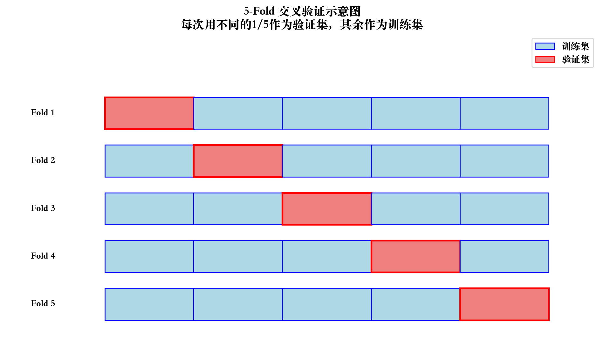

import matplotlib.pyplot as pltimport numpy as npimport pandas as pdimport seaborn as sns# 根据操作系统设置不同的字体import platform# 获取操作系统类型system = platform.system()# 设置 matplotlib 字体if system =='Windows': plt.rcParams['font.sans-serif'] = ['SimHei'] # Windows 使用黑体elif system =='Darwin': plt.rcParams['font.sans-serif'] = ['Songti SC'] # Mac 使用宋体else: plt.rcParams['font.sans-serif'] = ['WenQuanYi Zen Hei'] # Linux 使用文泉驿正黑# 解决负号显示问题plt.rcParams['axes.unicode_minus'] =False
/var/folders/dh/sd70vd1d0jg1tkw7h3zwjqxr0000gn/T/ipykernel_37940/3492466871.py:40: UserWarning:
Glyph 8321 (\N{SUBSCRIPT ONE}) missing from current font.
/var/folders/dh/sd70vd1d0jg1tkw7h3zwjqxr0000gn/T/ipykernel_37940/3492466871.py:40: UserWarning:
Glyph 8322 (\N{SUBSCRIPT TWO}) missing from current font.
/Library/Frameworks/Python.framework/Versions/3.11/lib/python3.11/site-packages/IPython/core/pylabtools.py:170: UserWarning:
Glyph 8322 (\N{SUBSCRIPT TWO}) missing from current font.
/Library/Frameworks/Python.framework/Versions/3.11/lib/python3.11/site-packages/IPython/core/pylabtools.py:170: UserWarning:
Glyph 8321 (\N{SUBSCRIPT ONE}) missing from current font.
Font 'default' does not have a glyph for '\u2212' [U+2212], substituting with a dummy symbol.
Font 'default' does not have a glyph for '\u2212' [U+2212], substituting with a dummy symbol.
Font 'default' does not have a glyph for '\u2212' [U+2212], substituting with a dummy symbol.
Font 'default' does not have a glyph for '\u2212' [U+2212], substituting with a dummy symbol.
Font 'default' does not have a glyph for '\u2212' [U+2212], substituting with a dummy symbol.
Font 'default' does not have a glyph for '\u2212' [U+2212], substituting with a dummy symbol.
Font 'default' does not have a glyph for '\u2212' [U+2212], substituting with a dummy symbol.
Font 'default' does not have a glyph for '\u2212' [U+2212], substituting with a dummy symbol.
Font 'default' does not have a glyph for '\u2212' [U+2212], substituting with a dummy symbol.
Font 'default' does not have a glyph for '\u2212' [U+2212], substituting with a dummy symbol.
Font 'default' does not have a glyph for '\u2212' [U+2212], substituting with a dummy symbol.
Font 'default' does not have a glyph for '\u2212' [U+2212], substituting with a dummy symbol.
Font 'default' does not have a glyph for '\u2212' [U+2212], substituting with a dummy symbol.
Font 'default' does not have a glyph for '\u2212' [U+2212], substituting with a dummy symbol.
Font 'default' does not have a glyph for '\u2212' [U+2212], substituting with a dummy symbol.
Font 'default' does not have a glyph for '\u2212' [U+2212], substituting with a dummy symbol.
Font 'default' does not have a glyph for '\u2212' [U+2212], substituting with a dummy symbol.
Font 'default' does not have a glyph for '\u2212' [U+2212], substituting with a dummy symbol.
关键点：
α = 0：无正则化（普通线性回归）
α 很小：弱正则化，接近普通回归
α 适中：平衡拟合与复杂度 ✓
α 很大：强正则化，可能欠拟合
10.2 4.2 交叉验证（Cross-Validation）
10.2.1 为什么需要交叉验证？
错误做法 ❌：在测试集上尝试不同的 α，选最好的
这样会”泄露”测试集信息
导致对模型效果的过于乐观估计
正确做法 ✓：用交叉验证在训练集上选 α
10.2.2 K-Fold 交叉验证

流程：
将训练集分成 K 份（例如 K=5）
每次用其中 1 份作验证，其余 K-1 份训练
重复 K 次，得到 K 个评分
取平均作为该 α 的评估分数
选择评分最好的 α
11 第五部分：正则化路径与可视化
11.1 5.1 正则化路径图（Regularization Path）
问题：随着 α 增大，各特征的系数如何变化？
Font 'default' does not have a glyph for '\u2212' [U+2212], substituting with a dummy symbol.
Font 'default' does not have a glyph for '\u2212' [U+2212], substituting with a dummy symbol.
Font 'default' does not have a glyph for '\u2212' [U+2212], substituting with a dummy symbol.
Font 'default' does not have a glyph for '\u2212' [U+2212], substituting with a dummy symbol.
Font 'default' does not have a glyph for '\u2212' [U+2212], substituting with a dummy symbol.
Font 'default' does not have a glyph for '\u2212' [U+2212], substituting with a dummy symbol.
Font 'default' does not have a glyph for '\u2212' [U+2212], substituting with a dummy symbol.
Font 'default' does not have a glyph for '\u2212' [U+2212], substituting with a dummy symbol.
Font 'default' does not have a glyph for '\u2212' [U+2212], substituting with a dummy symbol.
Font 'default' does not have a glyph for '\u2212' [U+2212], substituting with a dummy symbol.
Font 'default' does not have a glyph for '\u2212' [U+2212], substituting with a dummy symbol.
Font 'default' does not have a glyph for '\u2212' [U+2212], substituting with a dummy symbol.
Font 'default' does not have a glyph for '\u2212' [U+2212], substituting with a dummy symbol.
Font 'default' does not have a glyph for '\u2212' [U+2212], substituting with a dummy symbol.
Font 'default' does not have a glyph for '\u2212' [U+2212], substituting with a dummy symbol.
Font 'default' does not have a glyph for '\u2212' [U+2212], substituting with a dummy symbol.
Font 'default' does not have a glyph for '\u2212' [U+2212], substituting with a dummy symbol.
Font 'default' does not have a glyph for '\u2212' [U+2212], substituting with a dummy symbol.
观察：
α 很小时：所有特征都保留
α 逐渐增大：不重要的特征系数先变为 0
α 很大时：几乎所有特征都被剔除
12 第六部分：实践建议
12.1 6.1 正则化回归完整流程
graph TD
A[加载数据] --> B[数据标准化<br>StandardScaler]
B --> C[训练/测试切分]
C --> D[选择正则化方法]
D --> E1[Ridge: 特征都重要]
D --> E2[Lasso: 需要特征选择]
D --> E3[Elastic Net: 不确定]
E1 --> F1[RidgeCV 自动选α]
E2 --> F2[LassoCV 自动选α]
E3 --> F3[ElasticNetCV 自动选α]
F1 --> G[训练最终模型]
F2 --> G
F3 --> G
G --> H[测试集评估]
H --> I[可视化分析<br>系数/路径/残差]
style B fill:#fff9c4
style F1 fill:#c8e6c9
style F2 fill:#c8e6c9
style F3 fill:#c8e6c9
style I fill:#ffccbc